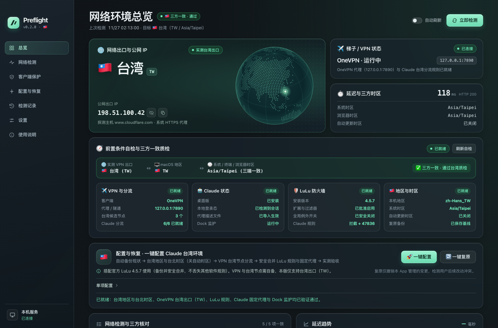

前置自检与三方质检
自动识别本机已安装的 VPN、LuLu、Claude 与代理描述文件状态。实时核对实测出口国旗（TW）、macOS 地区和三端时区（Asia/Taipei）完全一致。
Preflight 0.2.0 · macOS 13+ 通用版
独立 Mac App，搭配官方 LuLu 4.5.7 开源防火墙使用。前置自检 VPN、Claude 与防火墙状态，一键配置台湾地区、台北时区、分流规则与断线保护，并支持按备份一键复原。
本版仅支持台湾出口（🇹🇼 TW / Asia/Taipei）。VPN 与台湾节点需用户自备，本工具不提供订阅或节点。

自动识别本机已安装的 VPN、LuLu、Claude 与代理描述文件状态。实时核对实测出口国旗（TW）、macOS 地区和三端时区（Asia/Taipei）完全一致。
保存首次配置前基线，设置 TW 地区和台北时区并关闭自动更新时区，保留简体中文。OneVPN 1.5.1 自动三阶段合并台湾节点与 Claude 分流并实测 TW 出口。
不覆盖整套规则。先备份并指纹校验无关规则，再经 LuLu 官方接口安全合并 Claude 规则。点击「一键复原」仅撤销本 App 改动并检测冲突。
断线与节点保护
覆盖原生 Claude 桌面版、受管 Claude Code 终端与专用网页窗口。在面板点击「锁定受管连接」，看到确认会话数后再切换节点。
出口探测单次超时即暂停全部转发，经原节点重新确认原出口后恢复；手动锁定、节点变化或出口变化后旧会话保持锁定，且旧客户端仍占用启动位置，需完全退出旧客户端后再重新启动。轮询存在短暂检测间隔，并非绝对零延迟。
搭配官方 LuLu 4.5.7 静默拦截 Claude 直连，仅放行本机专用中继 127.0.0.1:47836。
隐私与安全
无需登录。仪表盘仅监听 127.0.0.1，最近 60 次检测存在内存中，退出即清除。首次配置备份以 0600 权限保存在本机，不含账号凭证，普通浏览器页面无法调用系统配置桥。
出口探测访问 www.cloudflare.com/cdn-cgi/trace；受管启动经代理访问 claude.ai/cdn-cgi/trace 核对真实台湾出口。
安装与首次授权
支持 macOS 13+，Apple 芯片（arm64）与 Intel（x86_64）双架构。依赖本机 Python 3.9+。当前发行包为本地临时签名，未经 Apple 公证。